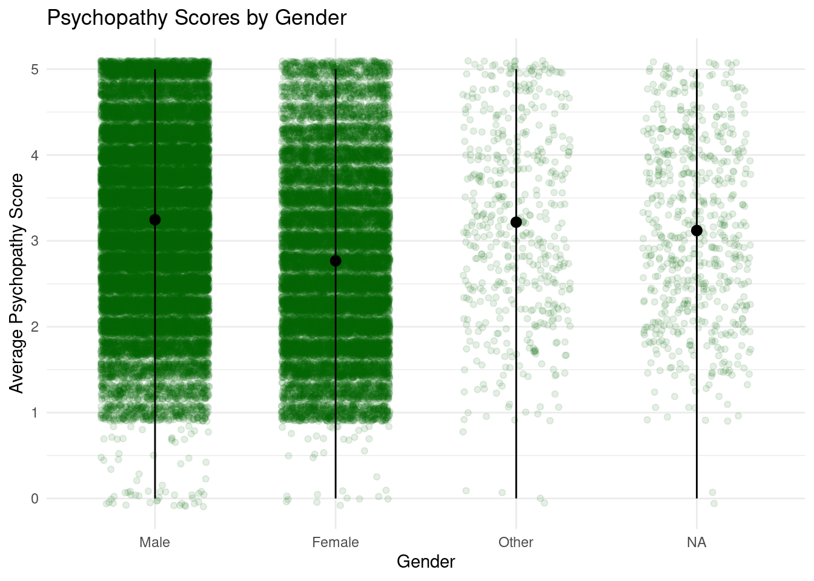

install.packages("ggplot2")Installing package into '/cloud/lib/x86_64-pc-linux-gnu-library/4.5'
(as 'lib' is unspecified)library(ggplot2)Does gender predict differences in personality traits related to narcissism, psychopathy, and Machiavellianism (known as the Dark Triad)? This question is important to me because it explores how social and developmental factors may influence the expression of darker personality traits. Understanding these patterns could offer insights into how personality is shaped and expressed differently across populations, which is valuable for both psychological research and everyday social awareness.
-To explore this question, I’m using a dataset from Kaggle that includes responses from an online personality test. While the dataset was not collected through a formal academic study, it uses validated psychological scales — including the Dirty Dozen (Jonason & Webster, 2010) and the Hypersensitive Narcissism Scale (Hendin & Cheek, 1997) — to measure traits related to narcissism, psychopathy, and Machiavellianism.
The dataset used in this project comes from Kaggle, and contains responses to an online personality test centered around the Dark Triad traits — narcissism, psychopathy, and Machiavellianism — as well as hypersensitive narcissism.
The data was collected through a publicly available quiz titled the Dark Triad Personality Test. Participants voluntarily completed the test online and answered items based on two validated psychological scales:
The Dirty Dozen (Jonason & Webster, 2010), a 12-item measure used to assess narcissism, Machiavellianism, and psychopathy.
The Hypersensitive Narcissism Scale (Hendin & Cheek, 1997), a 10-item scale measuring covert or vulnerable narcissism.
After completing the test, participants self-reported their age, gender, country, and accuracy rating (i.e., how honestly or seriously they answered the questions, on a scale from 0 to 100).
The dataset includes
- 10 HSNS items (HSNS1 to HSNS10)
- 12 Dirty Dozen items (DDM1–DDM4, DDP1–DDP4, DDN1–DDN4)- age
- gender (1 = Male, 2 = Female, 3 = Other)
- country
- accuracy (0–100)The data set includes 1,085 participants.
R and RStudio in Posit.Cloud
GitHub
Packages used: ggplot2
I will assess whether gender is related to differences in personality traits associated with narcissism, psychopathy, and Machiavellianism, using data from the Dirty Dozen scale. I will calculate an average score for each trait using the relevant survey items.
Narcissism: DDN1 to DDN4
Psychopathy: DDP1 to DDP4
Machiavellianism: DDM1 to DDM4.
To explore differences by gender, I will create dot plots that display individual participant scores for each trait, grouped by gender (1 = Male, 2 = Female, 3 = Other). These visualizations will help me observe patterns, such as whether one gender tends to have higher or more concentrated scores than others. I will focus on interpreting these visual trends to answer my question.
I predict that male participants will have moderately higher average scores than female participants on all three Dark Triad traits: narcissism, psychopathy, and Machiavellianism.
install.packages("ggplot2")Installing package into '/cloud/lib/x86_64-pc-linux-gnu-library/4.5'
(as 'lib' is unspecified)library(ggplot2)mydata <- read.csv("nyla_data.csv") mydata$gender <- factor(mydata$gender, levels = c(1,2,3), labels = c("Male", "Female","Other"))
scale1_vars <- c("DDN1", "DDN2", "DDN3", "DDN4")
mydata$narcissism <- rowMeans(mydata[, scale1_vars], na.rm = TRUE)
ggplot(mydata, aes(x = gender, y = narcissism)) +
geom_jitter(width = 0.3, size= 1.5, alpha = 0.5, color = "blue") +
labs(
x = "Gender",
y = "Average Narcissism Score",
title = "Narcissism Scores by Gender"
) +
theme_minimal()mydata$gender <- factor(mydata$gender, levels = c(1,2,3), labels = c("Male", "Female","Other"))
scale1_vars <- c("DDP1", "DDP2", "DDP3", "DDP4")
mydata$psychopathy <- rowMeans(mydata[, scale1_vars], na.rm = TRUE)
ggplot(mydata, aes(x = gender, y = psychopathy)) +
geom_jitter(width = 0.3, size= 1.5, alpha = 0.5, color = "darkgreen") +
labs(
x = "Gender",
y = "Average Psychopathy Score",
title = "Psychopathy Scores by Gender"
) +
theme_minimal() 
mydata$gender <- factor(mydata$gender, levels = c(1,2,3), labels = c("Male", "Female","Other"))
scale1_vars <- c("DDM1", "DDM2", "DDM3", "DDM4")
mydata$machiavellianism <- rowMeans(mydata[, scale1_vars], na.rm = TRUE)
ggplot(mydata, aes(x = gender, y = machiavellianism)) +
geom_jitter(width = 0.3, size= 1.5, alpha = 0.5, color = "blue") +
labs(
x = "Gender",
y = "Average Machiavellianism Score",
title = "Machiavellianism Scores by Gender"
) +
theme_minimal()